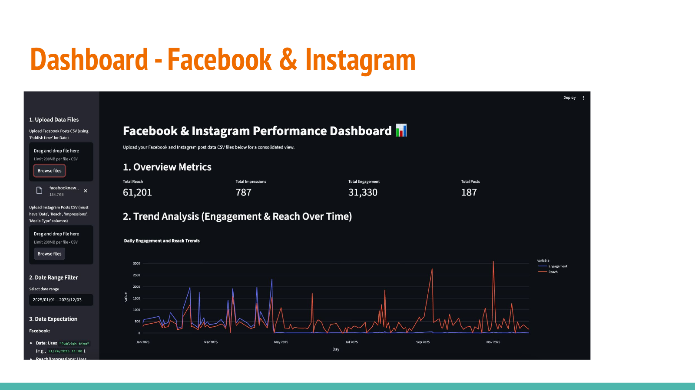
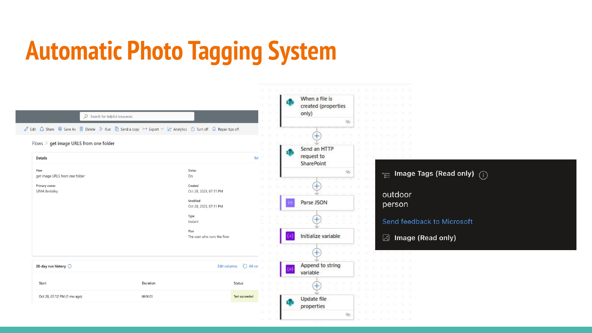
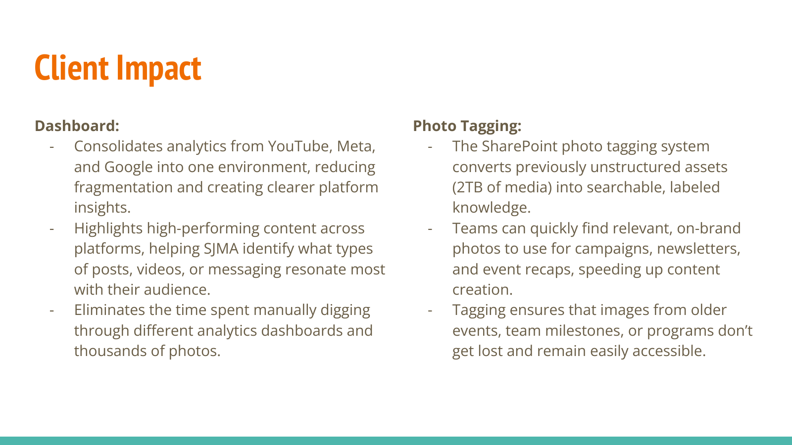

(05 / APPLIED AI + ANALYTICS)
San José Museum of Art
Role
Machine Learning Intern
Systems
Digital asset automation · Analytics
Tools
Power Automate · SharePoint · Azure AI Vision

(GOAL)
Modernizing two repetitive museum workflows.
The project focused on digital asset management and performance reporting: making a large photo archive searchable and consolidating recurring online analytics into one dashboard.


(PHOTO TAGGING)
Turning unstructured media into searchable assets.
The automated tagging workflow used SharePoint, Power Automate, and Azure AI Vision to detect and label content so museum staff could find useful images without manually navigating inconsistent folders.
2TB
media archive described in the final showcase
3
analytics ecosystems consolidated
1
central reporting environment
(ANALYTICS)
One place for cross-platform performance.
The reporting dashboard brought together metrics from YouTube, Meta, and Google Analytics, reducing fragmented manual reporting and making high-performing content easier to identify.

BACK TO
LumenRoute →